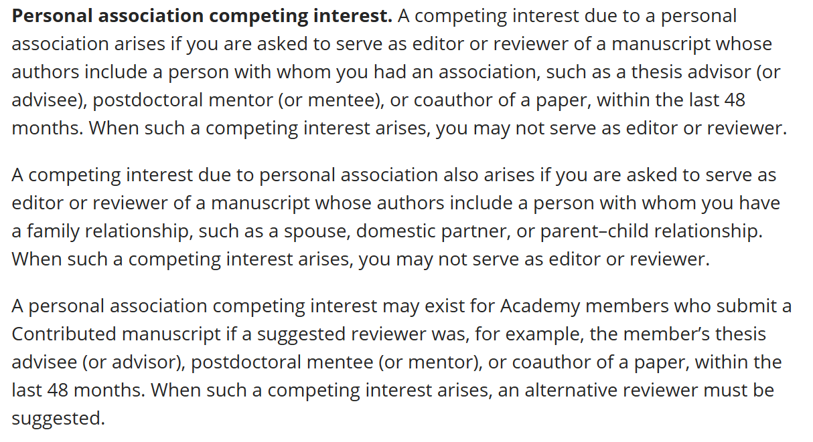

目录
1. 学术制度起源：罗马法与教会传统
2. 以CROTs为核心的现行学术评价规则
1. 英语语法的通行标准
CROTs的权威性与适用范围
除了CRediT之外，现行的CROTs还有CRO (Contributor Role Ontology), TaDiRAH (Taxonomy of Digital Research Activities in the Humanities)等。这些规则大同小异，都是将研究活动归纳为某些术语，其归纳方法也通常符合学术界此前通行的习惯。
（CRO；URL：https://github.com/data2health/contributor-role-ontology/tree/master）
（TaDiRAH；URL：https://www.tadirah.info/index.html）
（Elsevier；URL：https://www.elsevier.com/researcher/author/policies-and-guidelines/credit-author-statement）

（PNAS；URL：https://www.pnas.org/doi/epdf/10.1073/pnas.1715374115）

（Nature；URL：https://www.nature.com/nature/editorial-policies/authorship）

（Science；URL：https://www.science.org/content/page/instructions-preparing-initial-manuscript）

（National Science Review；URL：https://academic.oup.com/nsr/pages/Manuscript_Instructions?login=false）
 <
<
1. CRediT 14项贡献的深层解读
（1）概念化Conceptualization
定义Definition：
阅读理解规则Reading Comprehension Rule：
（2）方法论Methodology
定义Definition：
阅读理解规则Reading Comprehension Rule：
可能的争议点Possible Point of Contention：
（3）软件Software
定义Definition：
阅读理解规则Reading Comprehension Rule：
（4）确认Validation
定义Definition：
阅读理解规则Reading Comprehension Rule：
（5）形式分析（Formal analysis）
定义Definition：
阅读理解规则Reading Comprehension Rule：
（6）调查研究（Investigation）
定义Definition：
阅读理解规则Reading Comprehension Rule：
（7）资源提供（Resources）
定义Definition：
阅读理解规则Reading Comprehension Rule：
（8）数据管理Data Curation
定义Definition：
阅读理解规则Reading Comprehension Rule：
（9）写作 - 初稿（Writing - Original Draft）
定义Definition：
阅读理解规则Reading Comprehension Rule：
（10）写作 - 审阅和编辑（Writing - Review & Editing）
定义Definition：
阅读理解规则Reading Comprehension Rule：
（11）可视化（Visualization）
定义Definition：
阅读理解规则Reading Comprehension Rule：
（12）监督，指导和管理（Supervision）
定义Definition：
阅读理解规则Reading Comprehension Rule：
（13）项目管理（Project administration）
定义Definition：
阅读理解规则Reading Comprehension Rule：
（14）资金获取（Funding acquisition）
定义Definition：
阅读理解规则Reading Comprehension Rule：
致谢也和CROTs相关


（LegalClarity；URL：https://legalclarity.org/what-is-strict-interpretation-of-the-constitution/）
在爱思唯尔中是这样定义的：“论文作者资格：论文作者资格应当仅限于那些对所报告研究的构思、设计、实施或解释作出重大贡献的人。”


资金来源的通行标准-Crossref Funder
| 英文类型 (Funding Type) | 中文翻译 | 说明Explanation（英文来自 Crossref 文档） |
|---|---|---|
| APC | 文章处理费 | 文章处理费article processing charge |
| award | 奖励/一般资助 | 泛指奖项、奖励或不属于特定项目的一般性资助。a prize, award, or other type of general funding |
| BPC | 书籍处理费 | 用于支付开放获取书籍的出版费用。book processing charge |
| contract | 合同 | 涉及支付款项的正式协议。agreement involving payment |
| crowdfunding | 众筹 | 通过多个来源筹集资金，通常是在线小额筹款。funding raised via multiple sources, typically small amounts raised online |
| endowment | 捐赠基金 | 提供持续收入的捐赠款项。gift of money that will provide an income |
| equipment | 设备资助 | 设备的使用权或设备本身的赠予。use of or gift of equipment |
| facilities | 设施资助 | 场所、设备或其他资源的免费或优惠使用权。use of location, equipment, or other resources |
| fellowship | 研究金/学者津贴 | 用于支持研究或学习目的的拨款。grant given for research or study |
| grant | 拨款/基金 | 一种货币奖励，通常用于支持特定研究项目。a monetary award |
| infrastructure | 基础设施 | 用于支持研究的基础设施建设和发展。development of infrastructure to support research |
| loan | 贷款 | 预期需要偿还的资金或其他资源。money or other resource given in anticipation of repayment |
| other | 其他 | 未在上文明确定义的资助。award of undefined type |
| prize | 奖项 | 因某项成就而颁发的奖励。an award given for achievement |
| salary-award | 工资奖励 | 以薪酬形式发放的奖励，包括机构内部的研究经费。an award given as salary, includes intramural research funding |
| secondment | 人员借调 | 将人员或资源临时调派到其他地方执行任务。detachment of a person or resource for temporary assignment elsewhere |
| seed-funding | 种子资金 | 投资者以换取股权为目的投入的初始资本。an investor invests capital in exchange for equity |
| training-grant | 培训拨款 | 专为培训目的而设立的拨款。grant given for training |
利益冲突的披露标准
财务利益冲突 Financial Conflicts of Interest
个人利益冲突 Personal Conflicts of Interest
民法规则在学术上的应用
1. 贡献认定的基本要件 Basic Elements for Recognizing Contribution
2. 法律因果关系认定的三种理论 Three Theories for Determining Legal Causation
相当因果关系说 Adequate Causation Theory
必然因果关系说 Determinative Causation Theory
基于学科分类和时间戳的评价规则
以下是官方的报道摘要：
1. 学科分类的确定 Determination of Disciplines
结果如下：
- 14-XX Algebraic geometry
- 32Axx Holomorphic functions of several complex variables
- 35-XX Partial differential equations
- 51Fxx Metric geometry
- 53-XX Differential geometry
- 53C26 Hyper-Kahler and quaternionic Kahler geometry, special geometry
2. 时间戳 Time Stamp
\(\lim_{n\to\infty} (p_{n+1} - p_n) < 7 \times 10^7\)
\(\lim_{n\to\infty} (p_{n+1} - p_n) < 600\).
引文的要求